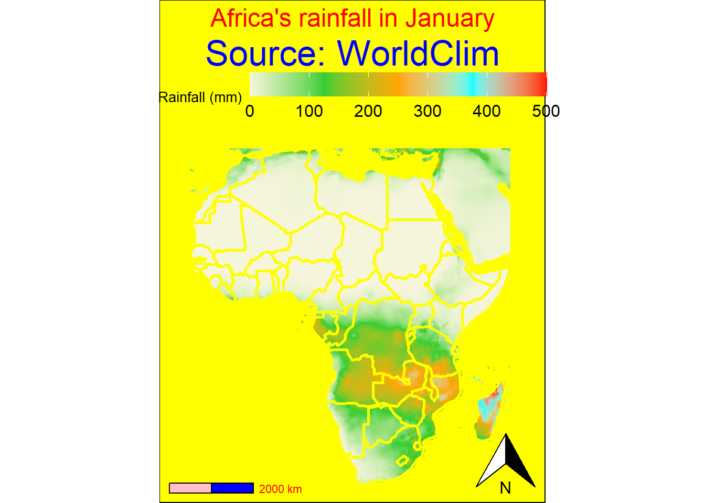

The following object is masked from 'package:rnaturalearth':
countries110
library(ggspatial)sf_use_s2(FALSE)
Spherical geometry (s2) switched off
Get Data
# Download global precipitation dataprecipitation <-worldclim_global(var ="prec", res =10, path =tempdir())# Extract raster layer for Januaryrain_month <- precipitation[[1]]# Get Africa shapefileafrica_sp <-ne_countries(continent ="Africa", returnclass ="sf") |>st_make_valid()
Crop & Prep
# Crop the rainfall raster to Africarain_month_africa <-crop(rain_month, vect(africa_sp))# Convert to dataframe for ggplotrain_df <-as.data.frame(rain_month_africa, xy =TRUE)colnames(rain_df) <-c("x", "y", "rain")
Plot Map
ggplot() +# add the rainfall raster as backgroundgeom_raster(data = rain_df, aes(x, y, fill = rain)) +# set colors that do not really fit well together in this context (or at all :D)scale_fill_gradientn(colours =c("beige", "limegreen", "orange", "cyan", "red"),name ="Rainfall (mm)",limits =c(0, 500),breaks =seq(0, 500, by =100),labels =seq(0, 500, by =100), ) +# set the country borders in yellowgeom_sf(data = africa_sp,fill =NA,color ="yellow",linewidth =1 ) +# add scale bar and north arrowannotation_scale(location ="bl",style ="bar",text_col ="red",bar_cols =c("pink", "blue") ) +annotation_north_arrow(location ="br") +# lock the coordinate location to africacoord_sf(xlim =c(-20, 55), ylim =c(-35, 38)) +# basic labels for title and subtitlelabs(title ="Africa's rainfall in January", subtitle ="Source: WorldClim") +# apply an empty theme with various ugly styling overridestheme_void() +theme(plot.title =element_text(size =18,color ="red",hjust =0.5 ),plot.subtitle =element_text(size =25,hjust =0.5,color ="blue" ),legend.position ="top",legend.key.width =unit(1.5, "cm"),legend.title =element_text(size =10),legend.text =element_text(size =12),plot.background =element_rect(fill ="yellow") )
Scale on map varies by more than 10%, scale bar may be inaccurate

Commentary
### i hope it is obvious that this is the map with less effort.i didn’t really do a lot here. i basically only:-> fetched the rainfall data and the shapefile (disabled the s2 geometry engine because it kept throwing errors) -> then cropped the rainfall data to the shapefile -> as last step for preparation i converted the cropped layer into a dataframe so i was able to plot it with ggplot. -> in the plot, i only made some basic things, like adding a color gradient to classify the amount of rainfall with the most horrendous mix i could imagine -> added the country borders in yellow to make it absolutely hard to see in the low-rain zones -> added some map style elements with the north arrow and the scalebar -> "locked" the coordinates to only have africa visible (kind of) -> and added title and subtitle, with also quite horrendous styles -> the cherry on top was to set the background in yellow as well, to finish off the eye torture :)